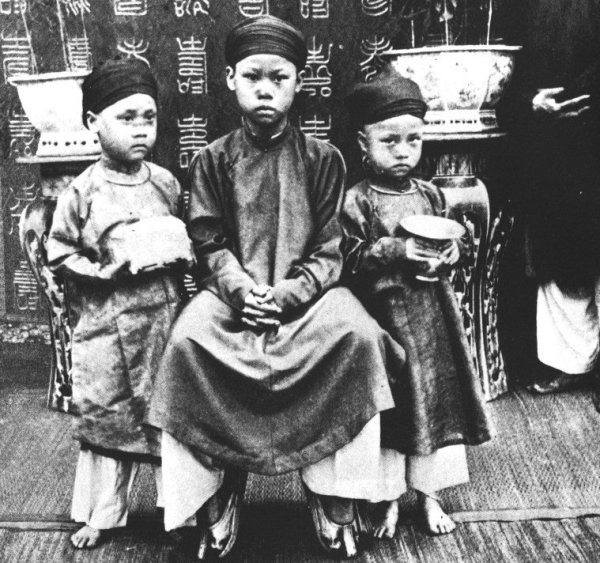

Việc Hoàng Tử Bửu Lân được tôn lên ngôi do một nguyên cớ như sau:
Viện Cơ Mật không dám tự tiện lựa chọn Tân Quân nên mới cùng nhau sang Tòa Khâm Sứ để hỏi ý kiến. Các quan hỏi ông Khâm Sứ rằng:
-" Hiện nay vua Đồng Khánh đã thăng hà, theo ý của quý Khâm Sứ thì nên chọn ai lên kế vị? ".
Nhưng ông Diệp Văn Cương, nhân viên tỏa khâm, lại dịch rằng:
- " Nay vua Đồng Khánh đã thăng hà, Lưỡng Tôn Cung cùng Cơ Mật đều đồng lòng chọn hoàng tử Bửu Lân lên ngôi, không biết ý kiến quý Khâm Sứ thế nào?.
Nghe thế, ông Khâm Sứ đáp:
- " Nếu Lưỡng Tôn Cung và Cơ Mật đã đồng ý chọn hoàng tử Bửu Lân thế tôi cũng xin tán thành ".
Câu này ông Cương cũng dịch ra một cách khác:
- " Theo tôi, thì các quan Cơ Mật nên chọn hoàng tử Bửu Lân là hợp hơn ca.
Thế rồi các quan Viện Cơ mật vâng lời ra về, liền đi rước hoàng tử Bửu Lân ( tức vua Thành Thái sau này).
Có sự sắp đặt trên do ông Diệp Văn Cương chồng là bà Công Nữ Thiện Niệm, con gái Thoại Thái Vương. Bà Thiện Niệm là cô ruột của vua Thành Thái.
Hoàng Tử Bửu Lân theo mẹ là bà Từ Minh Huệ Hoàng hậu Phan thị Điều về quê ngoại khi vua Dục Đức còn sinh thời. Đến năm Đống Khánh thứ 3 ( 1888) thì theo mẹ vào ở Thành Nội lo việc hương khói ở nhà thờ của vua Dục Đức.
Lúc triều thần về đến nhà để rước hoàng tử vào cung thì bà Từ Minh đi vắng. Hoàng tử tỏ vẽ lo sợ, hỏi:
- Các ông đến đây làm chi? Đến để bắt tôi mà trị tội à? Các ông muốn làm gì thì làm nhưng hãy đợi á ( mẹ) tôi về đã ".
Đến khi bà Từ Minh về, nghe các quan xin rước hoàng tử vào cung để tôn lên ngôi vua thì bà khóc, vì lo sợ cho tính mạng của hoàng tử khi ở ngôi vua. Thảm cảnh của chồng chết vì đói khát trong ngục, sau đó là hai vua Hiệp Hòa, Kiến Phúc, còn vua Hàm Nghi đang bị lưu đày, vẫn còn ám ảnh bà. Bà cố chối từ, nhưng các quan cam kết là không có việc gì đáng phải lo ngại, Lưỡng Tôn Cung. Cơ Mật Viện và ông Khâm Sứ đã đồng lòng chọn hoàng tử lên kế vị vua Đồng Khánh. Bà Từ Minh khi ấy mới yên lòng.
Thế là hoàng tử Bửu Lân được rước vào Đại Nội chuẩn bị làm lễ đăng quang.
